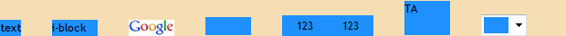
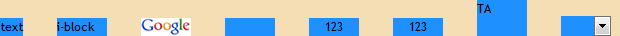

根据 CSS 2.1 规范中的描述，'word-spacing' 特性指定了单词 (word) 之间的间距特性。
单词间距算法取决于用户端，同时也会受对齐 (参见 'text-align' 特性)
的影响。当应用了空白处理规则后，单词间距会作用在文本中的空格 (U+0020)、非间断空格 ( , U+00A0)、表意空格 (全角空格, U+3000) 的左侧。
关于 'border-collapse' 特性的更多信息，请参考 CSS2.1 规范：16.4 Letter and word spacing: the 'letter-spacing' and 'word-spacing' properties 中的内容。
若行框内包含非文本内容 (如图片、表单元素等替换元素)，设定了 'word-spacing' 特性，则在 Chrome Safari 中，单词间隙不会作用在这些内容之间的空白符上。
这个问题将造成行内内容的间隙在不同浏览器之间出现差异。
| Chrome Safari |
|---|
CSS 规范中仅描述了 'word-spacing' 特性设定的是 "单词" 之间的间距，并没有会说明 "单词" 是否包含所有的行内级元素，还是仅指代文本。
根据问题描述构造如下测试样例：word-spacing_text.html
<!DOCTYPE html> <html> <head> <style> * { margin:0; padding:0; border:0;
font:12px 'Trebuchet MS'; } div * { background:dodgerblue; vertical-align:bottom; overflow:hidden;
resize:none; } </style> </head> <body> <div style="word-spacing:30px;
heidght:30px; background:wheat; "> <span>text</span> <span
style="display:inline-block; width:50px;">i-block</span> <img
src="google_small.gif" style="width:50px;" /> <input type="text"
style="width:50px;" /> <input type="button" style="width:50px;"
value="123" /> <button style="width:50px;">123</button> <textarea
style="width:50px;">TA</textarea> <select
style="width:50px;"></select> </div> </body> </html>
上述代码中，DIV 元素设定了 word-spacing:30px;，其内创建了若干行内级元素，包括了文本及非文本内容 (如图片、表单元素)，各行内级元素之间存在空格。
在各浏览器中的表现如下：
| IE6 IE7 IE8(Q) |  |
|---|---|
| IE8(S) Firefox Opera |  |
| Chrome Safari |
可见，
使用 'word-spacing' 特性时需谨慎，应只将其使用在文本内容上。
| 操作系统版本: | Windows 7 Ultimate build 7600 |
|---|---|
| 浏览器版本: |
IE6
IE7 IE8 Firefox 3.6.10 Chrome 8.0.552.5 dev Safari 5.0.2 Opera 10.63 |
| 测试页面: | word-spacing_text.html |
| 本文更新时间: | 2010-10-21 |
word-spacing word 单词 间距 inline text 文本 替换 行内